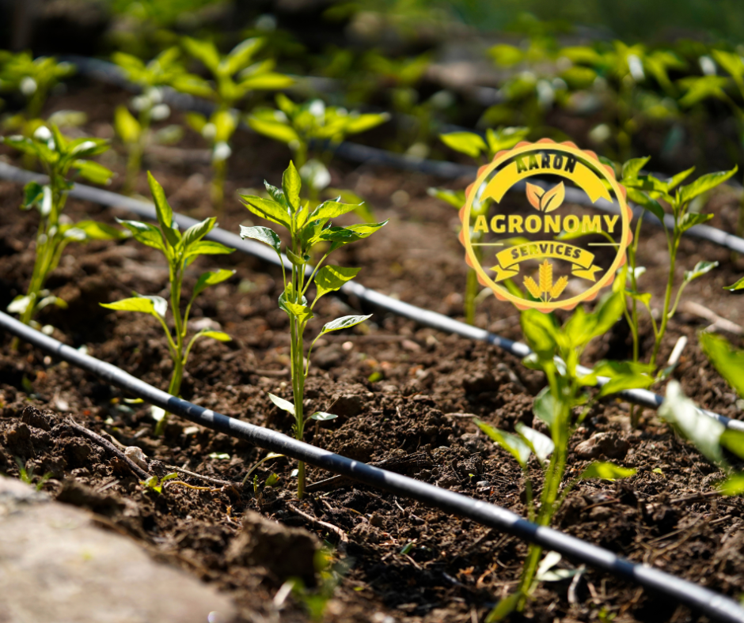

Efficient • Sustainable • Modern Farming Solutions
At Aaron Agronomy Services, we prioritize efficient and sustainable farming practices, and our commitment to excellence is reflected in our expertise in drip irrigation systems.
Drip irrigation is a water-efficient method that delivers precise amounts of water directly to the root zones of plants, promoting optimal growth while minimizing water wastage.
Our experienced team designs and installs customized drip irrigation systems tailored to the specific needs of your farm. Whether you are a small-scale farmer or managing a large agricultural enterprise, we provide reliable and cost-effective solutions.
Contact Us